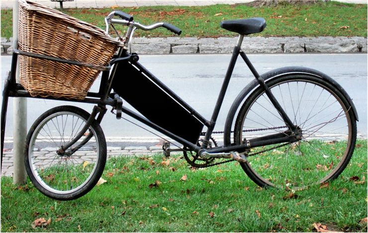

Product Review: All baskets were not created equal

From the moment early bicycles were made to be safe for their drivers, manufacturers started
improving not only the performance characteristics of their bicycles but also devising new
ways to make them more useful for both general users and government/business employees who
were in need of extra space on the bicycle that could be used to transport personal
belongings of business goods. History of widespread use of bicycle baskets and other
accessories that enable the carrying of cargo on bicycles started in the very first
years of the 20th century. By then several governments around the world started phasing
out carrying material on short distances by horses or carriages, preferring to give
employees bicycles with larger carrying capacity. One example of that was Canada which
in first years of 20th century purchased large quantities of bicycles with large back
baskets that were used by their postmen.
Here is the list of the most commonly used bicycle cargo accessories on modern market:
Front bicycle basket – Basket mounted on the top handlebars (always on upright handlebars,
never on “drop handlebars”), usually made from metal, plastic, composite materials or even
interlocked whiskers. Overloading the front basket can cause significant problems in handling
the bicycle, especially if the center of the cargo’s weight is not in the very middle of the
basket. Additionally, if too much cargo is placed in the front basket, driver’s vision can
become obstructed.
Back bicycle basket – Often made in the form of bicycle “luggage carrier”
accessory that that houses pre-made basket case mounted above the rear wheel and behind the
seat of the driver. Rear baskets are usually narrower and longer than front baskets, and
can handle much larger carrying capacities. Overloading back bicycle basket does not
compromise the driving as much as overloading front basket.
.
Luggage carrier (racks) – Very popular cargo attachment that can be mounted
above rear wheel or less commonly over the front wheel. They are popular because cargo that
is placed on them can be much larger in bulk than pre-made bicycle baskets would allow.
Also, racks can be used as platforms for short range transport of additional passengers
even though majority of these accessories are designed to carry only up to 40kg of weight..
Pannier – Pair of connected baskets, bags, containers or boxes that are
mounted on both sides of the bicycle. Originally used as cargo accessories on horses and
other livestock that was used as transport, but in recent 100 years they are more and more
used as great way to enhance carrying capabilities of modern bicycles. Today they are mostly
used on touring bicycles, although some work bicycles have them also..
.
Saddlebag – Another accessory that was previously used on horse riding
that was moved to bicycles are saddlebags. Previously mounted on all four sides of horse’s
saddle, bicycle saddlebags are today mounted behind and below modern bicycle seats. They
are smaller, and most often used to pack the essential repair tools, first-aid kits and
rain gear. They are rarely found on urban road bicycles, but are more common on touring,
racing and mountain bikes.